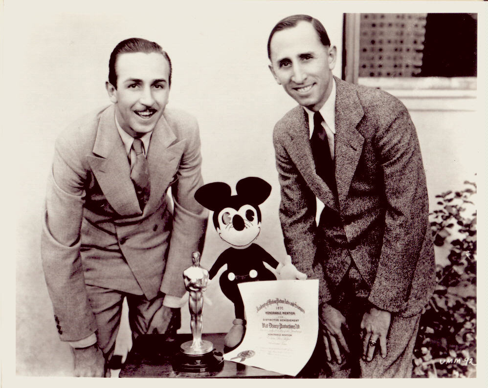
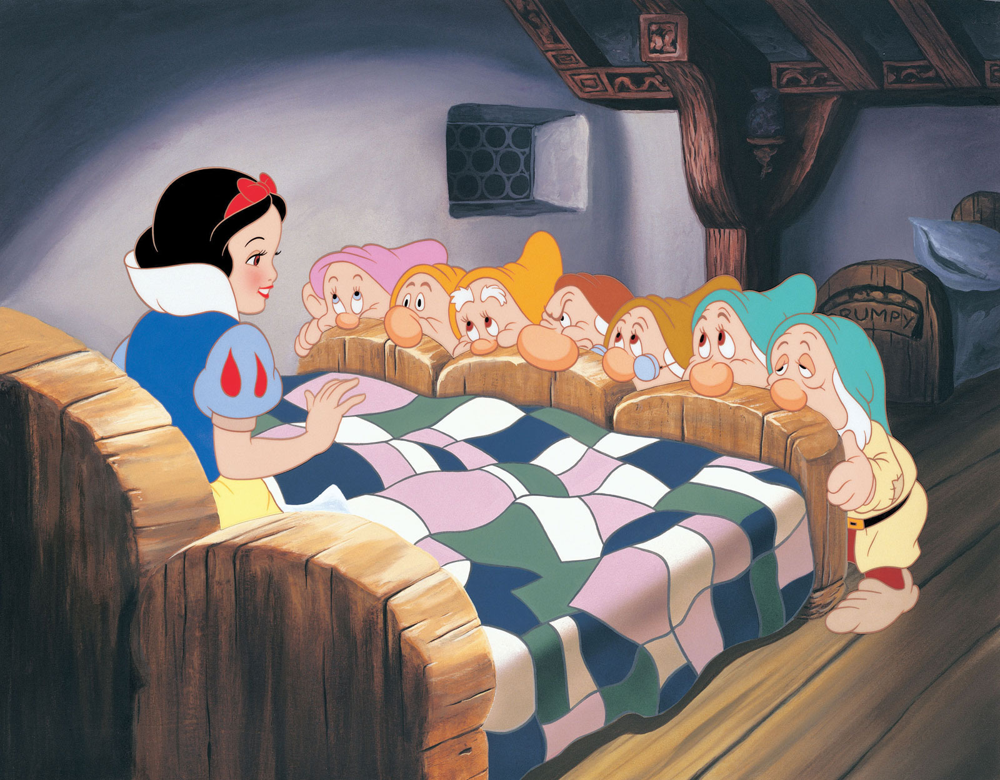

The Walt Disney Company started in 1923 in the rear of a small office occupied by Holly-Vermont Realty in Los Angeles.It was there that Walt Disney, and his brother Roy, produced a series of short live-action/animated films collectively called the ALICE COMEDIES. The rent was a mere $10 a month. Within four months, the ever-growing staff moved next door to larger facilities, where the sign on the window read "Disney Bros. Studio." A year later, in 1925, the Disneys made a depositon a Hyperion Avenue lot in the Silver Lake district of Los Angeles. Construction began on the new studio shortly thereafter. During the next 14 years, many changes took place at the Disney studio: Mickey Mouse was "born" in 1928, followed by Pluto, Goofy, Donald Duck, and the rest of the Disney gang.
In 1937, Disney's innovative first full length animated feature, SNOW WHITE AND THE SEVEN DWARFS, was released to critical acclaim and worldwide success. In order to expand and meet the expectations of his audience, Walt saw a need to increase the size of his studio. With profits from SNOW WHITE, he made a deposit on 51 acres of land in Burbank and began designing a modern studio specifically for the purpose of making animated films.Walt was personally involved with all aspects of designing the studio. From the layout of the buildings to design of the animators' chairs, nothing was left to chance. His main concern was to produce a self-sufficient, state-of-the-art production factory that provided all the essential facilities for the entire production process.
